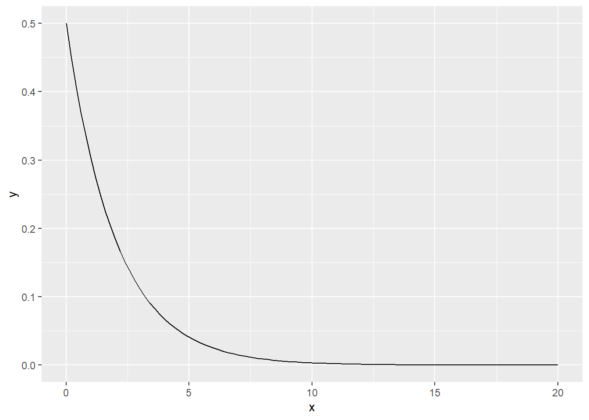
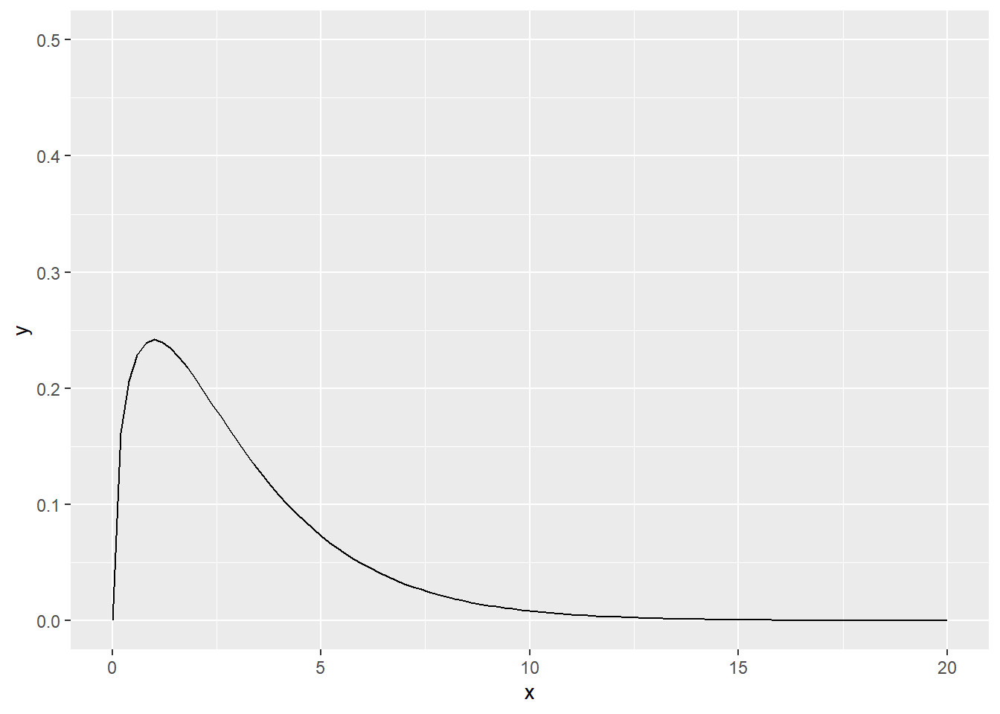
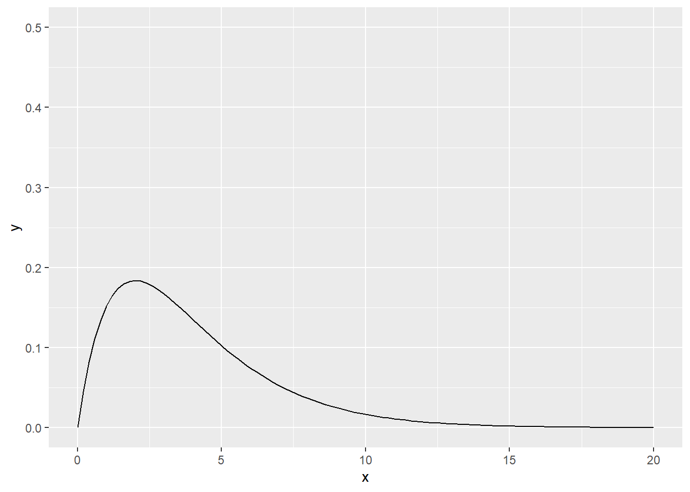

11 Khiin neliö \(\chi^2\)
Mittausasteikot: Molemmat muuttujat luokittelu- tai järjestysasteikolla.
Khiin neliö tai khii kahteen, \(\chi^2\), on riippuvuusmitta jota voidaan käyttää kun molemmat muuttujat ovat kategorisia, eli luokittelu- tai järjestysasteikolla. Khiin neliössä käytetään vain muuttujien kategorioiden määriä (n). Ytimessä on vertailu odotettuihin arvoihin, eli kuinka paljon odottaisimme jokaisen kategoriaparin kohdalla esiintyvän, jos suhdetta muuttujien välillä ei ole?
Khiin neliössä lasketaan kaksi ristiintaulukointia: todelliset arvot ja odotetut arvot. Todelliset arvot saadaan yksinkertaisesti ristiintaulukoimalla molemmat muuttujat. Riippuvainen muuttuja laitetaan yleisesti sarakkeisiin ja riippumaton muuttuja riveihin, mutta laskutoimituksen kannalta tällä ei ole merkitystä. Todellisille arvoille lasketaan myös rivi- ja sarakesummat, sekä kokonaissumma (datapisteiden määrä, n).
Khiin neliön suure vaihtelee nollasta (ei yhteyttä) äärettömään (täydellinen yhteys). Jakauman muoto määrittyy vapausasteista.




11.1 Khiin neliön malliodotukset
Khiin neliö ei riipu yleisistä malliodotuksista. Sen sijaan sillä on kaksi tärkeää omaa odotusta, liittyen riippumattomuuteen sekä odotettuihin arvoihin.
Riippumattomuudella tarkoitetaan tässä, että khiin neliö voidaan vain laskea ryhmien välisessä rakenteessa. Kahdessa kategoriassa ei siis voi olla samoja vastaajia. Jokaisen kategorian vastaaja tulisi olla uniikki yhdellä muuttujalla.
Solujen odotettujen arvojen minimimäärä on myös määritelty, jotta khiin neliön testi olisi luotettava. Jos testaat 2*2-rakennetta (eli molemmat muuttujat ovat dikotomisia), yksikään solu ei saisi saada odotetun arvon alle viisi. Jos testaat suurempaa rakennetta, kaikkien odotettujen arvojen tulisi olla yli yhden, ja korkeintaan 20 prosenttia (viidesosa) kaikista odotetuista arvoista saisi olla alle viiden.
Jos vaatimus ei täyty, sinulla on liian vähän dataa jokaisessa solussa laskeaksesi khiin neliön testin. Jos sinulla on useampia kategorioita jollain muuttujalla, voit yrittää yhdistellä niitä - mutta ota huomioon tulkittavuus!
Huomioi myös, että suurissa otoksissa myös pienet erot voivat johtaa merkitsevään khiin neliön suureeseen. Tarkista aina erojen todelliset koot (prosenteissa tai absoluuttisissa arvoissa), jotta pystyt tulkitsemaan mahdollisen eron merkityksen.
11.2 Khiin neliön laskeminen
Nimetään solu rivien \(i\) ja sarakkeiden \(j\) mukaan. Todellinen arvo nimetään \(O_{ij}\) (engl. observed value) ja odotettu arvo nimetään \(E_{ij}\) (engl. expected value)
Odotetut arvot lasketaan jokaiselle solulle \(ij\) laskukaavalla:
\[ E_{ij} = \frac{\text{rivisumma}_i * \text{sarakesumma}_j}{n} \]
Jokaisen solun \(ij\) kohdalla kerrotaan siis ensin solun rivisumma \(\sum{}_i\) solun sarakesummalla \(\sum{}_j\), jonka jälkeen tulos jaetaan kokonaissummalla \(n\). Lopputulos on odotettu arvo \(E_{ij}\).

Tämän jälkeen khiin neliö lasketaan jokaiselle solulle laskukaavalla:
\[ \chi^2_{ij} = \frac{(O_{ij} - E_{ij})^2}{E_{ij}} \]
Jokaisen solun \(ij\) kohdalla vähennetään siis ensin solun odotettu arvo \(E_{ij}\) solun todellisesta arvosta \(O_{ij}\). Tulos nostetaan toiseen potenssiin eli neliöön, jonka jälkeen arvo jaetaan vielä odotetulla arvolla \(E_{ij}\).
Jos jokaisen solun khiin neliön arvo summataan yhteen, saadaan khiin neliön suure, \(\chi^2\).
Khiin neliön suure noudattaa khiin neliön jakaumaa. Todennäköisyys merkitsee siksi todennäköisyyttä saada nähty khiin neliön suure tai isompi, jos populaatiossa khiin neliön arvo pitäisi olla nolla (ei yhteyttä).
Khiin neliön jakauma määritellään vapausasteilla. Khiin neliön vapausasteet on yksinkertaisesti rivien määrä pois yksi \(r-1\), kertaa sarakkeiden määrä pois yksi \(c-1\):
\[ \text{df} = (r - 1)(c - 1) \]
Khiin neliö voidaan raportoida sellaisenaan, mutta yleensä haluamme myös jonkun mitan siitä, kuinka suuri yhteys muuttujilla näyttäisi olevan. Paras vaihtoehto on tietenkin raportoida alkuperäiset todelliset arvot (tai niiden prosenttiosuudet), koska nämä ovat helpoimmin ymmärrettävissä.
Vaihtoehtoisesti voi myös käyttää Cramérin V-suuretta. V-suure vaihtelee nollasta yhteen, ja osoittaa yhdellä numerolla, kuinka laajasti muuttujat yhteisvaihtelevat. V-suure lasketaan kaavalla:
\[ V = \frac{\chi^2/n}{min(r-1, c-1)} \] Ensin jaat khiin neliön suureen otoskoolla. Sitten jaat tuloksen joko rivien määrällä pois yksi tai sarakkeiden määrällä pois yksi, kumpi on pienempi.
Cramérin V-suureen tulkinta riippuu vapausasteista. Taulukko alla näyttää raja-arvot tulkinnalle:
| Vapausaste | Pieni | Keski | Suuri |
|---|---|---|---|
| 1 | 0,1 | 0,3 | 0,5 |
| 2 | 0,07 | 0,21 | 0,35 |
| 3 | 0,06 | 0,17 | 0,29 |
| 4 | 0,05 | 0,15 | 0,25 |
| 5 | 0,04 | 0,13 | 0,22 |
11.3 Khiin neliö Excelissä
Khiin neliö vaatii neljä osa-askelta Excelissä:
- Todellisten arvojen taulukko,
- Odotettujen arvojen taulukko,
- Khiin neliön taulukko, ja
- Lopputuloslaskut.
11.3.1 Todellisten arvojen taulukko
Rakenna taulukko, jonka riveissä on yhden muuttujan kaikki kategoriat, ja sarakkeissa on toisen muuttujan kaikki kategoriat.
Laita muuttujien kategoriat ensimmäiseen sarakkeeseen ja ensimmäiselle riville (ks. Alaluku 15.4).
Solujen arvot voit laskea funktiolla:
=LASKE.JOS.JOUKKO(muuttuja1; arvo1; muuttuja2; arvo2)
Voit käyttää lukitustoimintoa $ lukitaksesi joko rivi- tai sarakeviittauksen, jotta voit käyttää Excelin vetotoimintoa toistaaksesi funktion kaikissa soluissa. Hyödynnä muuttujien kategorianumeroita ensimmäisessä sarakkeessa ja ensimmäisellä rivilla - mutta ole tarkkana, että viittaukset ovat oikein jos/kun kopioit solusta toiseen!
Laske rivi- ja sarakesummat SUMMA-funktiolla.
Laske kokonaissumma summaamalla joko rivi- tai sarakesummat yhteen.
11.3.2 Odotettujen arvojen taulukko
Rakenna samanlainen taulukko kuin todellisille arvoille, mutta jätä pois summarivi ja summasarake. Kategorioiden nimiä ei tarvitse lisätä, mutta auttaa taulukon lukemisessa.
Laske jokaiselle solulle seuraava laskukaava:
=(sarakesumma * rivisumma) / kokonaissumma
Voit jälleen käyttää lukitustoimintoa $ helpottaaksesi solujen täyttöä. Tarkista, että kaikki solut viittaavat niiden omiin sarake- ja rivisummiin - virheitä syntyy helposti!
11.3.3 Khiin neliön taulukko
Rakenna jälleen samanlainen taulukko kuin edellisissä taulukoissa, jättäen pois rivi- ja sarakesummat. Nimiä ei taaskaan tarvita, mutta suositellaan.
Laske khiin neliön arvo jokaiselle solulle seuraavalla laskukaavalla:
=(todellinen arvo - odotettu arvo)^2 / odotettu arvo
Et tarvitse lukita mitään tässä, koska kaikki arvot riippuvat solun sijainnista, joten voit käyttää vetotoimintoa täyttääksesi taulukon nopeasti.
11.3.4 Lopputuloslaskut
Laske khiin neliön suure summaamalla kaikki arvot khiin neliön taulukossa yhteen.
Laske vapausasteet kaavalla =(rivimäärä - 1) * (sarakemäärä - 1). Voit laskea rivi- ja sarakemäärät automaattisesti AINUTKERTAISET.ARVOT-funktiolla (ks. Alaluku 15.3; Alaluku 14.5.9).
Laske khiin neliön oikeahäntäinen todennäköisyysarvo p kaavalla:
=CHINELIÖ.JAKAUMA.OH(suure; vapausasteet)
Jos haluat, voit vielä laskea Cramérin V-suureen laskutoimituksella:
=NELIÖJUURI( (khiinneliö / kokonaissumma) / min(rivimäärä - 1; sarakemäärä - 1) )
11.4 Khiin neliön raportointi
Khiin neliön testistä raportoidaan mieluisesti seuraavat tiedot:
Testisuure \(\chi^2\)
Vapausasteet \(\text{df}\)
P-arvo \(p\)
Kuinka moni odotettu arvo on alle 1 tai alle 5 (ks. ALALUKU)
Jos laskettu: Cramérin V-suure \(V\)
Yleensä kannattaa myös jatkoanalysoida mitkä kategoriat eroavat toisistaan, esimerkiksi post hoc-testeillä. Voit myös tarkastaa solujen prosenttiosuuksia ja raportoida isoimmat erot, mutta tämä ei ole yhtä luotettava menetelmä kuin virallinen testaus.
Prontoon kirjatuissa asuntopaloissa havaittiin suuri, merkitsevä yhteys rakennuksen riskiluokituksen ja palovaroittimen toiminnan välillä (\(\chi^2 = 29.3\), \(\text{df} = 9\), \(p = 0.0006\), \(V = 0.22\)). Riskiluokkaan 1 kuuluvista rakennuksista jopa 56 prosentilla puuttui palovaroitin, kun vastaava arvo muissa riskiluokissa oli 18 - 33 prosenttia. Palovaroittimen toiminta oli harvinaisinta riskiluokka 4:ssä (7 %). Kaikki odotetut arvot ylittivät yhden, mutta kolme solua (19 %) olivat alle viiden. Tulokset ovat siten tulkittavuuden rajalla, ja voivat olla väärällisiä.